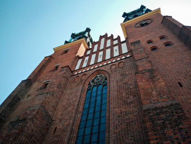

<!DOCTYPE html>
<html>
<head>
    <meta charset="utf-8">
    <meta content="width=device-width, initial-scale=1.0, minimum-scale=1.0, maximum-scale=1.0,user-scalable=no" name="viewport"/>
    <meta name="description" content="">
    <meta name="keywords" content="">
    <link  rel="stylesheet" type="text/css" href="css/common.css" />

</head>
<style>

    html,body{
        margin: 0;
        padding: 0;
    }
</style>
<body>

<div id="routeIntroduction" class="clearfix">
    <!--<div class="positionBar pt10 pb10">
        <span class="w24 arrowIcon fl ml10" onclick="backUrl()"><a href="javascript:void(0);"></a></span>
        <span class="enrollees f18 color38 dblock textAlign">路书简介</span>
    </div>-->
    <div class="roadBookTxt mt30  pl10 pr15 pb10" v-html="introductionData"></div>
<!--    <div class="roadBookTxt">-->
<!--        <p class="ml25 mr25 mt30 mb30 pt22">-->
<!--            <strong>住宿安排：</strong>-->
<!--            住宿全方位升级，明示酒店，不只是有地方休息那么简单。特别安排市区四星级酒店住宿+升级一晚市区五星级酒店+一晚湖区小镇特色酒店+两晚特色庄园酒店+一晚峰区小镇特色酒店-->
<!--        </p>-->
<!--        <span class="Img"></span>-->
<!--        <p class="ml25 mr25 mt30 mb30">-->
<!--            <strong>餐饮特色：</strong>-->
<!--            餐饮全方位升级，打造一场英式光明料理美食盛宴。特别安排一顿伦敦米其林一星级餐厅三道式西餐+一顿爱丁堡著名街头美食“英式肉夹馍”+一顿湖区炸鱼薯条西餐+一次贝蒂茶室下午茶体验+一次全英著名的贝克韦尔布丁体验；全程英式自助早餐，中餐升级七菜一汤，中西结合，调节您的味蕾，更佳合理；-->
<!--        </p>-->
<!--        <span class="Img"></span>-->
<!--        <h2 class="mt30 f15 ml25 mr25"><strong>行程亮点：</strong></h2>-->
<!--        <p class="ml25 mr25 mt30 mb30">-->
<!--            <strong>独家安排英国峰区：</strong>英国峰区国家公园(Peak District   National Park)是英国第一家国家公园和最大的国家公园，成立于1951年，位于英格兰中部，谢菲尔德和曼彻斯特两个城市之间，最高点海拔达到636米。这里环境安宁，大自然气息浓厚，景色美赞，特别适合外出活动，所以也称为“英国的户外天堂”，每年接待的游客量高达两千多万。深入峰区，游览因Bakewell Pudding出名的贝克韦尔小镇及因维多利亚女王知名的马特洛克巴斯小镇。特别安排乘坐缆车登上亚伯拉罕高地（Heights of Abraham），俯瞰德文特山谷（Derwent Valley）和峰区的壮丽景色。-->
<!--        </p>-->
<!--        <span class="Img"></span>-->
<!--        <h2 class="mt30 f15 ml25 mr25"><strong>独家安排英格兰北部海滩旅游胜地：</strong></h2>-->
<!--        <p class="ml25 mr25 mt30 mb30">-->
<!--            <strong>惠特比：</strong>-->
<!--           如果你喜欢海滩，惠特比不容错过。这里是英格兰北部最吸引人的海滩旅游胜地。小镇中世纪的街道从泊满色彩斑斓的小渔船的港口向四周辐射，蜿蜒狭窄如迷宫一般。-->
<!--        </p>-->
<!--        <span class="Img"></span>-->
<!--        <p class="ml25 mr25 mt30 mb30">-->
<!--            <strong>苏格兰风笛悠扬：</strong>-->
<!--           深度游览苏格兰首府、英国著名文化古城爱丁堡。爱丁堡城堡、皇家英里大道、王子街、卡尔顿山、威士忌体验中心、大象咖啡馆，一网打尽。-->
<!--        </p>-->
<!--        <span class="Img"></span>-->
<!--        <p class="ml25 mr25 mt30 mb30">-->
<!--            <strong>顶级名校博物馆之旅：</strong>-->
<!--            游览闻名全球的牛津大学、剑桥大学，以及世界10大古老的大学之一的格拉斯哥大学。游览世界知名博物馆—大英博物馆，并赠送专业中文讲解。-->
<!--        </p>-->
<!--        <span class="Img"></span>-->
<!--        <p class="ml25 mr25 mt30 mb30">-->
<!--            <strong>哈利波特主题：</strong>-->
<!--             “哈利·波特”诞生地：大象咖啡馆，当年穷困潦倒的罗琳，在这里借道取暖和创作。 国王十字火车站——9又3/4站台：在故事里，要前往霍格沃兹魔法学校，必须在位于国王十字火车站第9与10月台之间的九又四分之三月台，乘搭霍格华兹快车； 肉铺街哈利波特电影中对角巷的外景地，是小魔法师们买各式各样魔法用具的地方。-->
<!--        </p>-->
<!--        <span class="Img"></span>-->
<!--        <p class="ml25 mr25 mt30 mb30">-->
<!--            <strong>自由自在：</strong>特别安排两大英国名城伦敦、爱丁堡自由活动，让您可以享受无拘无束的自由旅程；-->
<!--        </p>-->
<!--        <p class="ml25 mr25 mt30 mb30">-->
<!--            <strong>贴心安排：</strong>伦敦自由活动当天特别安排酒店至市中心大巴，免去您语言不通、道路不熟的烦恼；-->
<!--        </p>-->
<!--        <p class="ml25 mr25 mt30 mb30">-->
<!--            <strong>英式午茶：</strong>贝蒂茶室，英格兰北方优质茶室，也是约克人气美食名店，感受正宗英式下午茶；-->
<!--        </p>-->
<!--        <span class="Img"></span>-->
<!--        <p class="ml25 mr25 mt30 mb30">-->
<!--            <strong>贴近自然：</strong>游览大不列颠岛美丽的地方，如诗似画的温德米尔湖区；-->
<!--        </p>-->
<!--    </div>-->
</div>
<script src="js/vue2.min.js"></script>
<script src="js/axios.min.js"></script>
<script src="js/flexible.js"></script>
<script src="js/utils.js"></script>
<script type="text/javascript">
    var app = new Vue({
        el:'#routeIntroduction',
        data:{
            introductionData:'',
            queryId:'27'
        },
        mounted(){
            this.queryId=GetRequest().id;
            this.routeinfor();
        },
        methods:{
            routeinfor(){
                let _this = this;
                return new Promise((resolve, reject) => {
                    const data = {
                        type:1,
                        id:_this.queryId
                        // id:'161',
                    };
                    postData(data,'AmoskiRiding/appRidingGuideManage/queryRouteInfo').then(response =>{
                        if (response.code == 0){
                            const result = response.data;
                            if(result)
                            {
                                _this.introductionData = result.introduction;
                            }
                            resolve(result)
                        } else {
                            // reject('error')
                        }
                    }).catch(error => {
                        // reject(error)
                    })

                })
            }
        }
    })
</script>
</body>
</html>
